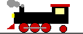
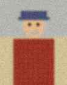
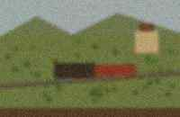
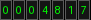

 |
WALT'S RAILROAD PAGE!! |
 Me at the Curve, Oct. 1996 |
Hello and thank you for stopping by. My name is Walt Szymanski and I live in Altoona, Pennsylvania which as everybody
knows is the RAILROAD CITY. I worked 34 years as a signal maintainer for the Pennsylvania Railroad, then Penn Central,
then Conrail, and retired in March 1997. Now I finally have time for my trains!
My grandson Kevin put this computer together for me last Christmas and showed me how to make a web page on GeoCities. So this is it. Please be patient as I am still learning. Kevin says I type in all capitals too much. |
|
The J&W is a freelanced HO railroad set in the Allegheny mountains around 1952, the last year before the diesels
took over. It is 11 ft by 19 ft and fills most of the basement except for the furnace and Bev's washer and dryer.
(Bev says the trains are not allowed to go in the laundry room. I am working on her.)
 Looking east towards "Gallitzin" tower. Picture is fuzzy, sorry, Kevin's camera. Facts about the J&W:
|
|
1963 - Hired by Pennsylvania R.R. as signal helper, Pittsburgh Division 1966 - Signal maintainer, Horseshoe Curve to Gallitzin 1968 - Penn Central (we don't talk about that) 1976 - Conrail 1997 - Retired. Got a watch and a cake. I have probably climbed every signal mast between Altoona and Johnstown. In the blizzard of 1993 I was out for 31 hours straight. My father Stanley worked in the Juniata Shops for 40 years so you could say it runs in the family. |
|
UPDATE 9/7/98: GOT THE TENDER! Thank you to Ron H. in Mansfield, Ohio who mailed it and would not take a dime. Ron, the next time you are in Altoona you are running the first train.
I am looking for E-mail me: wszymanski@nb.net |
|
This is my wife Bev of 38 years. She does tole painting and has sold at the Blair County craft fair every year since 1985.
She painted all the signs on my layout too. She said I could put her on here as long as I did not use the
picture from the Christmas party. So no picture yet!
We have 3 children (Mark, Denise and Paul) and 5 grandchildren. Kevin is the computer one. |
|
This site is a member of the Steel Rails Model Railroad WebRing [Prev] [Random] [Next] [List Sites] |
SIGN MY GUESTBOOK! View Guestbook
You are visitor number

Last updated: September 7, 1998
Best viewed with Netscape Navigator 3.0 at 800x600